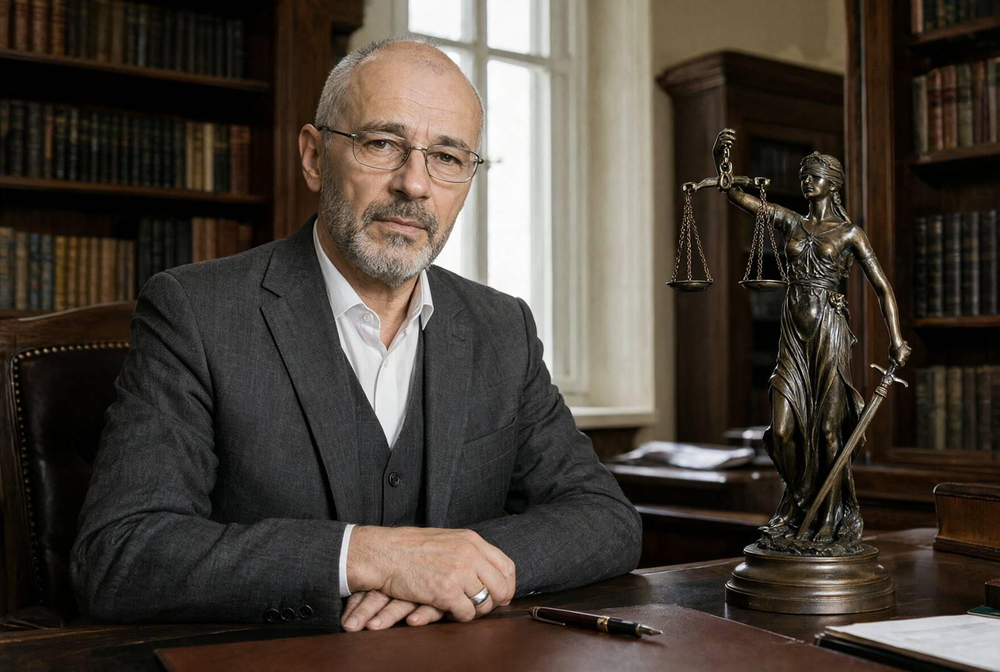

| Прізвище, ім'я, по батькові | Сенишин Андрій Васильович |
|---|---|
| Дата народження | 03.02.1968 (56 років) |
| Місце народження | м. Львів |
| Адреса реєстрації | м. Львів, вул. Ґерданська, 9, кв. 3 |
| Адреса фактичного проживання | м. Львів, вул. Ґерданська, 9, кв. 3 |
| Місце роботи / посада | Приватний нотаріус (приватна нотаріальна контора, вул. Ґерданська, 9, партер). Нотаріус з 1999 р. |
| Контактний телефон | +380 67 214 08 51 |
| Сімейний стан | Вдівець. Дружина — Сенишина Олена (померла у 2017 р.) |
| Близькі родичі | Син — Сенишин Максим Андрійович, 2000 р.н., тел. +380 63 905 44 18 |
| Цивільна дружина (спільне проживання) | Гнатів Вікторія Олегівна, тел. +380 50 377 19 62 |
| Транспортний засіб | Volvo XC60 (2016), сірий, держ. номер ВС 1592 КХ (зареєстровано на особу) |
| Судимість | Не має |
Відомості внесено до довідки за даними паспорта громадянина України, зі слів близьких осіб та з баз обліку.

Андрій Васильович Сенишин — приватний нотаріус Львівського міського нотаріального округу. Нотаріальну діяльність веде з 1999 року. Працює в центральній частині міста, в історичній будівлі на вулиці Ґерданській.
Посвідчуємо угоди та документи з дотриманням чинного законодавства, з повагою до часу й інтересів клієнтів.
Понеділок – п'ятниця: 09:00 – 18:00
Субота: за попереднім записом
Неділя: вихідний
м. Львів, вул. Ґерданська, 9 (партер, вхід з двору)
Записатися: +380 67 214 08 51
Дата друку: 13.11.2024.